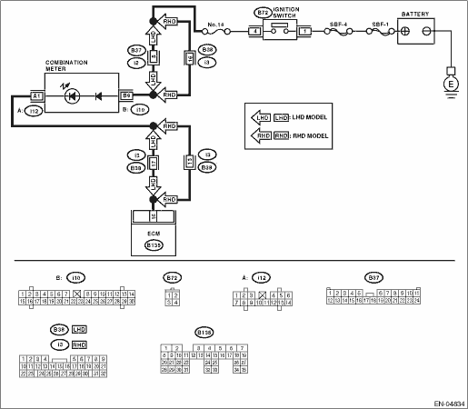

DIAGNOSIS:
The malfunction indicator light circuit is shorted.
TROUBLE SYMPTOM:
Although malfunction indicator light illuminates when the engine runs, DTC is not shown on the Subaru Select Monitor or general scan tool display.
WIRING DIAGRAM:


| STEP | CHECK | YES | NO |
|
Does the malfunction indicator light illuminate? |
Repair the short circuit of harness between combination meter and ECM connector. |
Replace the ECM. |